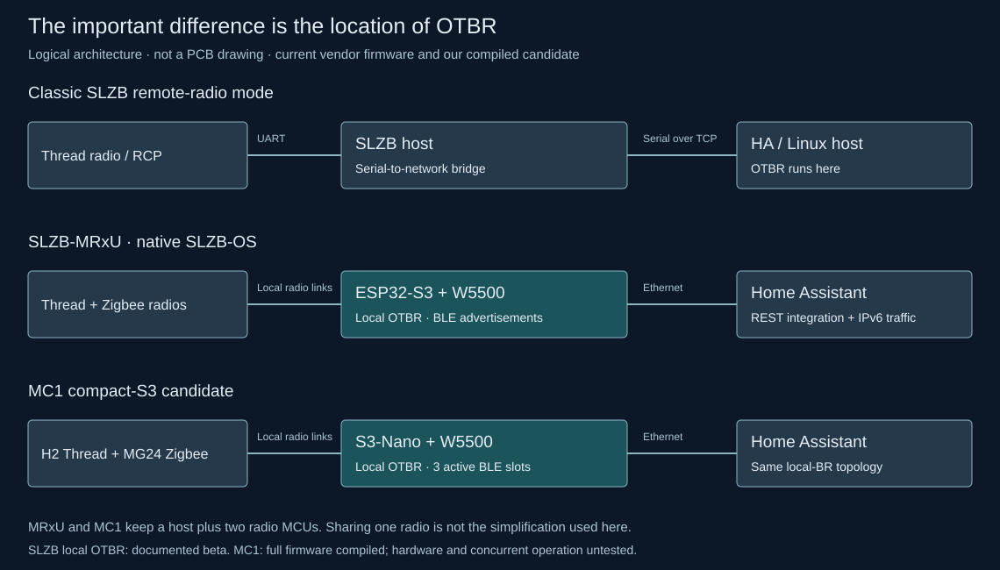

Historical design study. Its findings describe the pre-Nano revision. The selected design is now implemented in the
current MC1 carrier and firmware; use those files for construction.
SMLIGHT SLZB review · 2026-10-17 · three specialist reviews
What SMLIGHT already solves — and what it changes for MC1
Current SLZB-xU devices can run the Thread border router locally. Their ESP32-S3, W5500 and separate radio architecture supports our compact-host direction; it does not remove the host processor.
Keep S3-Nano-M as the current full-function candidate. Use SLZB-MRxU as an architecture reference and a possible finished Zigbee/Thread appliance. Prioritize recovery testing before committing the next carrier layout.
Source and compatibility review. No SMLIGHT unit was measured, flashed or tested. The existing MC1 and compact-S3 firmware builds do not establish SMLIGHT hardware parity.

Follow the OTBR location, not just a Thread logo. Click for the full-size diagram.What changes our conclusion?
The architecture is already used in a finished product
MRxU combines an ESP32-S3 host, W5500 Ethernet and two independent radio SoCs. MR5U uses two MG24 radios. The host still owns networking and application services; one radio serves Zigbee and the other Thread.
EvidenceThread over Ethernet has two different meanings
Classic mode sends radio serial traffic to an OTBR process on another machine. The newer on-device mode runs the border router in the SLZB itself and exposes a REST API. Only the latter matches the location of our Thread stack.
EvidenceNative BLE is not our active Bluetooth proxy
SLZB-OS on U/Ultima forwards advertisements to Home Assistant and supports scanning, but its manual explicitly excludes active BLE connections. Our full profile retains three active ESPHome BLE connections.
EvidenceLess PSRAM can work, but the workload matters
U-series documentation specifies 2 MB PSRAM. That weakens any claim that a local Thread border router inherently needs 8 MB. It does not measure our larger concurrent workload, and the selected Nano keeps 8 MB without adding a component.
EvidenceA Thread failure can restart our entire host
Source review of our pinned ESP-IDF/OpenThread path found that fatal RCP reset failure can reach assertion/termination and reboot the S3. The normal returned-error path keeps other services alive, but it does not cover every lower-layer failure. This is a source-identified risk, not a reproduced hardware crash.
EvidenceFirmware modes are different products in practice
A mode advertised for the family is not proof of every feature running simultaneously on every model. A local border router is also not a Matter controller.
Changes worth making to our implementation plan
- FirstProve recovery, not just startup
Define a deliberate response to fatal RCP failure: the pinned stack can terminate the host, and registering a no-op callback is not a fix. Then fault-inject a missing/rebooting RCP, Ethernet loss and address renewal. Check IPv6 forwarding, OMR routes, discovery and REST recovery while the other services run. Preserve the existing tested REST 404 behavior.
- FirstMeasure the actual shared workload
Record minimum internal heap, largest free block, PSRAM usage, task stack margins and UART/SPI service latency during concurrent traffic and OTA. Vendor RAM capacity is evidence of a different workload, not our runtime measurement.
- NextKeep upgrade and network state recoverable
Verify Thread dataset export/import, reboot persistence, OTA health confirmation and fallback. Keep radio-update procedures separate from normal startup; do not turn every connection error into a network reset.
- ConditionalUse an I2C GPIO expander only when it removes more hardware
Ultima places slow reset/BOOT controls on TCA9555. Moving only our H2 reset and BOOT would save two native GPIO, from 21 to 19, but adds a module and an initialization dependency. Nano already fits 21; there is no demonstrated simplification yet.
These are verification and design tasks, not completed runtime fixes. The source-level recovery findings are detailed in the firmware review below.
Could we use the finished product instead?
For a finished Zigbee + Thread appliance
MRxU is a credible option to evaluate instead of manufacturing that part of the project. Preserve the chosen Zigbee host protocol and test local-OTBR firmware on the actual model. This is a change in project scope if the other functions move elsewhere.
For the complete ceiling hub
Ultima gets closer with Z-Wave and RF options, but active BLE and the existing radar/environment/RF interfaces still need proof. Its three native UARTs can already be occupied by two radios and Z-Wave, leaving the radar needing another serial path.
Reviews and reproducible evidence
Primary sources